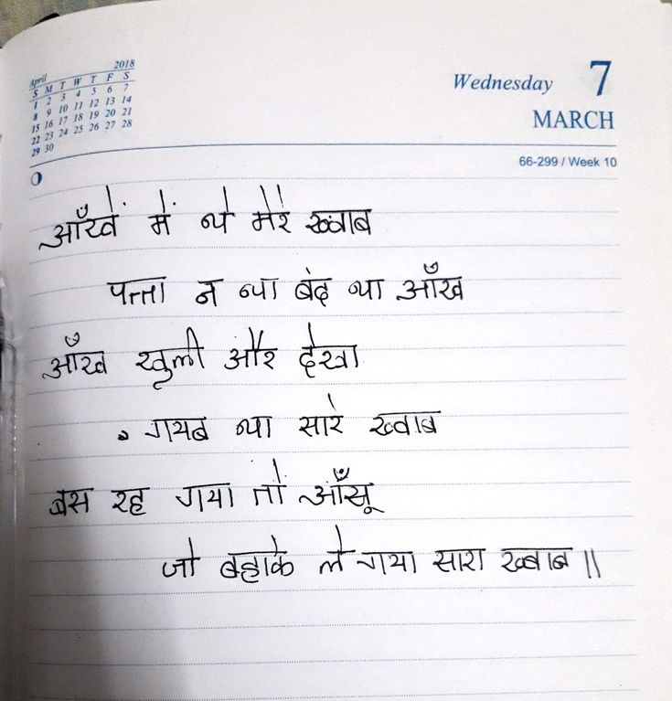

File: hin_sample_19.jpg

आँखें में थे मेरे ख्वाब पत्ता न था बंद था आँख आँख खुली और देखा ० गायब था सारे ख्वाब बस रह गया तो आँसू जो बहाके ले गया सारा ख्वाब ॥
Wednesday 7 MARCH April 2018 S M T W T F S 1 2 3 4 5 6 7 8 9 10 11 12 13 14 15 16 17 18 19 20 21 22 23 24 25 26 27 28 29 30 66-299 / Week 10 आँखें में थे मेरे ख्वाब पत्ता न न्या बंद था आँख आँख खुली और देखा गयब न्या सारे ख्वाब बस रह गया तो आँसू जो बहाके ले गया सारा ख्वाब ॥
2 जा | gia में at कर soe श्र कि पाता A al ag on aire gta खुली ste da 2 SHS व्या सार a8 रह SA आँसू at ag तर गया सपा AE |
Sega मा SU GIR a eg re | Te SAS MIR लीड 3 | जग रह STAY AV ता हक आम oa a सारा कुबोबए 7 -
Wednesday MARCH आँख् ठ सार
❌ OCR Failed
ॲक्ष-ढः
गी ईे । वि थि । र्ष गुप्री हेह नीए रिषे ने ईै ५ रु नेब गी ईैश। उ-होँ हे ग् हू गी गधिवयधशविषग् । मीटिरित् रीर-रशशपपडिभर गिधि पेड इंलेब गय ई ई गेरू यर्ंजार्बि ऱी प न-ठ्चा बढ़ अ उनगर्ध ज आर्ब खुली औऱ देखा गाभब टय सर रु्वाड हैऽु वंस रह गया ई गा आंश़ु जो बहाके लेगाया खारा खुबाबि
डततड़ पश्वल्श्व य़ क क क क क क क क क क अ क क क क पणा्त आँखें मेें ब्ये मेरे ख्वाब पत्ता ग श ब्ब ब्रा आँख आँचख खुली औऱ हेख्ा ग्र सारे सार ख्वा तश रठ गमा ग आँसू बहाके लेगया त् गया भार ख्वाबग